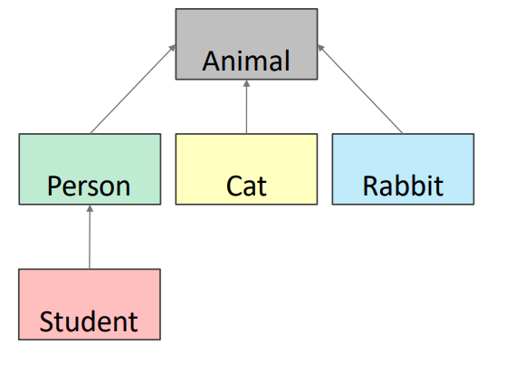

class Coordinate(object):
# define attributes here
pass7 OOP
In Python tutto è un oggetto e ogni oggetto è un’istanza di una classe, e ha:
- Un tipo (la classe)
- Una rappresentazione dei dati interna
- Un insieme di procedure per l’interazione con altri oggetti
Tutte queste caratteristiche servono a descrivere un’astrazione dell’entità che la classe sta rappresentantando di cui un oggetto è una sua realizzazione.
Python ci permette di creare nuovi oggetti di qualsiasi tipo, manipolarli e distruggerli.
La distruzione può essere sia eslpicita che implicita:
- Esplicitamente: usando
deloppure implicitamente “dimenticandoci” di loro. - Python effettuerà un reclaim degli oggetti distrutti o inaccessibili attraverso un sistema di “garbage collection”
il modulo
gcci permette di modificare alcuni parametri del sistema garbace collection, come ad esempio disabilitarlo o regolarne la frequenza.
7.1 Oggetti
Gli oggetti sono astrazioni di dati che includono:
- Una rappresentazione interna:
- attraverso attributi dati membro
- Una interfaccia per l’interazione con l’oggetto
- attraverso i metodi membro
- i quali definiscono il comportamento dell’oggetto, ma nascondono l’implementazione (information hiding)
7.2 Implementazione di una classe
La parola object significa che Coordinate è un oggetto Python ed eredita tutti i suoi attributi.
Coordinateè una sottoclasse diobject.objectè una superclasse diCoordinate.
7.3 Attributi e attributi procedurali
Dati e procedure appartengono alla classe.
- Attributi dati:
- Sono altri oggetti che descrivono la struttura interna della classe
- Attributi procedurali (metodi)
- Funzioni che possono essere utilizzate solo nel contesto della classe
- Permettono di interagire con l’oggetto istanza della classe definita
7.4 Come creare un’istanza di una classe
La definizione di un oggetto prevede l’uso di un costruttore come in tutti i linguaggi OOP.
In Python, per creare una nuova istanza della classe si utilizza __new__(Class)
- È un metodo statico che prende come primo argomento la classe di cui è stata richiesta un’istanza.
- Il valore di ritorno di
__new__()è l’istanza del nuovo oggetto.
class Coordinate(object):
def __init__(self,x):
self.x = x
origine = Coordinate.__new__(Coordinate)
# print(origine.x) Errore
if isinstance(origine, Coordinate):
print("origine è una coordinata")
origine.__init__(3)
print(f"x: {origine.x}")origine è una coordinata
x: 3Quindi __new__ è il costruttore di una classe, che può essere ridefinito a piacimento, mentre __init__ mi permette di inizializzare l’oggetto della classe.
__new__permette di modificare l’allocazione in memoria degli oggetti di una classe.
__new__si occupa di fabbricare la scatola__init__si occupa di cosa è contenuto nella scatola
Le implementazioni tipiche di un costruttore creano una nuova istanza della classe invocando il metodo __new__() della superclasse, usando super().__new__(cls, [...]).
Possiamo realizzare un’istanza di una classe utilizzando direttamente il metodo __init__ poiché questo implicitamente richiama il metodo __new__ ridefinito dalla classe stessa o quella della super classe.
- La parola chiave
selfrappresenta l’istanza della classe e lega gli attributi con gli argomenti dati (analogia con il puntatorethisin Java/C++). __new__()è pensato principalmente per consentire alle sottoclassi di tipi immutabili di personalizzare la creazione di istanze, ovvero la loro allocazione in memoria.
7.4.1 Attributi statici:
class Robot:
popolazione = 0
print(Robot.popolazione)0È possibile omettere le classi da cui eredita la classe che stiamo creando, essa implicitamente eredita dalla classe object.
Invece di utilizzare esplicitamente il metodo __init__ possiamo utilizzare il nome stesso della classe per inizializzare un oggetto: essa richiama direttamente il metodo __init__ il quale a sua volta richiama il metodo __new__.
r = Coordinate(3)
print(r.x)3Come possiamo vedere non è possibile implementare alcuna sorta di information hiding poiché tutti gli attributi di una classe possono esser direttamente acceduti avendo a disposizione l’oggetto della classe.
Quindi non è necessario implementare i metodi getter e setter anche se è comunque una buona pratica farlo.
7.5 Metodo __del__()
__del()__ è il distruttore o finalizzatore di una classe.
Esso viene invocato quando l’istanza sta per essere distrutta.
- Se una classe base ha un metodo
__del__()allora esso deve esser chiamato esplicitamente se la classe figlia ridefinisce il comportamento di__del__(). - Normalmente non è necessario ridefinire il comportamento di tale metodo
Questo metodo viene chiamato implicitamente se definito nel momento in cui non esistono più riferimenti validi all’oggetto. Viene utilizzato il metodo del Reference Counting, ovvero non appena il contatore dei riferimenti scende a zero, Python si accorge che l’oggetto è inutile e invoca __del__() prima di liberare memoria, se il metodo è definito.
7.6 Metodi di classe
Sono attributi procedurali, ovvero funzioni che possono essere utilizzate solo nel contesto della classe in cui sono definiti.
- Python, di default, passa sempre un oggetto come primo parametro alla chiamata di un metodo.
- Per convenzione si utilizza il parametro
selfcome nome del primo parametro di tutti i metodi di una classe.
- Per convenzione si utilizza il parametro
- L’operatore
.è utilizzato per accedere agli attributi di una classe- Un attributo dato di un oggetto
- Un metodo di un oggetto
Eccetto per self e la notazione ., i metodi di una classe si comportano semplicemente come funzioni.
class Coordinate(object):
def init (self, x, y):
self.x = x
self.y = y
def distance(self, other):
x_diff_sq = (self.x-other.x)**2
y_diff_sq = (self.y-other.y)**2
return (x_diff_sq + y_diff_sq)**0.57.6.1 Come utilizzare un metodo:
Esistono principalmente due modi per utilizzare un metodo, uno convenzionale e un equivalente (sconsigliato)
class Coordinate(object):
def __init__ (self, x, y):
self.x = x
self.y = y
def distance(self, other):
x_diff_sq = (self.x-other.x)**2
y_diff_sq = (self.y-other.y)**2
return (x_diff_sq + y_diff_sq)**0.5
c = Coordinate(3,4)
zero = Coordinate(0,0)
# CONVENZIONALE
print(c.distance(zero))
# EQUIVALENTE
print(Coordinate.distance(c,zero))5.0
5.07.7 Metodo __str__
Di Default la print di un oggetto restituisce una rappresentazione non informative
Dobbiamo ridefinire il metodo __str__ per una classe se vogliamo fornire info diverse
Python chiama __str__ quando invochiamo la print su un oggetto istanza di una classe
class Coordinate(object):
def __init__ (self, x, y):
self.x = x
self.y = y
def distance(self, other):
x_diff_sq = (self.x-other.x)**2
y_diff_sq = (self.y-other.y)**2
return (x_diff_sq + y_diff_sq)**0.5
c = Coordinate(1,2)
print(c)
class Coordinate(object):
def __init__ (self, x, y):
self.x = x
self.y = y
def distance(self, other):
x_diff_sq = (self.x-other.x)**2
y_diff_sq = (self.y-other.y)**2
return (x_diff_sq + y_diff_sq)**0.5
def __str__(self):
return f"<{self.x},{self.y}>"
c = Coordinate(1,2)
print(c)<__main__.Coordinate object at 0x7f9c1eef1400>
<1,2>7.8 Tipi e Classi
Possiamo verificare il tipo di un oggetto utilizzando il metodo isinstance() mentre possiamo ottenere il tipo di un oggetto utilizzando la funzione type()
x = 3
print(type(x))
if isinstance(x, int):
print("È un intero")<class 'int'>
È un intero7.9 Operatori speciali
Come per la funzione __str__ possiamo fare l’override di questi operatori nel contesto della definizione di una classe
| Attributo procedurale | Operatore |
|---|---|
__add__(self, other) |
self + other |
__sub__(self,other) |
self - other |
__eq__(self, other) |
self == other |
__lt__(self, other) |
self < other |
__len__(self) |
len(self) |
| etc | … |
7.10 Metodi getter e setter
getters e setters devono esser utilizzati al di fuori della classe per accedere ai dati membro (information hiding).
7.11 Information hiding in Python
Python non è un buon linguaggio di programmazione per l’information hiding!!
- Consente di accedere ai dati all’esterno di una definizione di classe
- Consente di scrivere i dati dall’esterno di una definizione di classe
- Consente di creare dati membro per un oggetto dall’esterno di una definizione di classe
Nessuno di questi esempi rientra nei buoni modi di programmare considerando l’information hiding.
8 Ereditarietà in Python
- Class padre (superclass)
- Class figlia (subclass)
- eredita tutti i dati e metodi membro della classe padre
- aggiunge più info
- aggiunge più comportamenti
- sovrascrive comportamenti
- Python supporta anche l’ereditarietà multipla

class Animal(object):
def init (self, age):
self.age = age
self.name = None
def get_age(self):
return self.age
def get_name(self):
return self.name
def set_age(self, newage):
self.age = newage
def set_name(self, newname=""):
self.name = newname
def str (self):
return "animal:"+str(self.name)+":"+str(self.age)- La classe
Animaleredita dalla classe baseobject. - La classe
objectimplementa tutte le operazioni di base in Python, come il binding di variabili, etc
Una classe che eredita da un’altra classe ha la possibilità di modificare alcuni comportamenti o aggiungere nuove funzionalità:
class Cat(Animal):
def speak(self): # nuova funzionalità
print("meow")
def __str__(self): # ridefinizione
return "cat:"+str(self.name)+":"+str(self.age)Il metodo __init__ non è mancante, viene riutilizzato quello fornito dalla classe padre (Animal)
8.0.1 Override
Una sottoclasse può avere dei metodi con lo stesso nome di quelli forniti dalla superclasse. Quando si invoca tale metodo allora:
- si cerca dapprima il nome del metodo nella definizione di classe corrente
- se il metodo non viene trovato, si cerca il metodo risalendo la gerarchia
- si usa il primo metodo trovato risalendo la gerarchia
8.1 Ereditarietà multipla
class A:
def m(self):
print("m of A called")
class B(A):
def m(self):
print("m of B called")
class C(A):
def m(self):
print("m of C called")
class D(C,B):
passAbbiamo parlato di ereditarietà, o più specificamente di ereditarietà singola. In questo caso una classe eredita da una sola classe.
L’ereditarietà multipla, invece, è una caratteristica in cui una classe può ereditare attributi e metodi da più di una classe genitore.
L’ereditarietà multipla comporta un elevato livello di complessità e ambiguità in situazioni come il problema del diamante (diamond problem).
8.2 Il problema del diamante o il “diamante mortale”
Il problema del diamante è il termine generalmente usato per indicare un’ambiguità che si presenta quando:
- Due classi
BeCereditano da una superclasseA - Un’altra classe
Deredita sia daBche daC - Se c’è un metodo
minAper il qualeBoC(o addirittura entrambi) hanno fatto un override, e seDnon fa l’override di questo metodo, allora quale versione del metodo ereditaD?
class A:
def m(self):
print("m of A called")
class B(A):
def m(self):
print("m of B called")
class C(A):
def m(self):
print("m of C called")
class D(B,C):
pass
a = A()
b = B()
c = C()
d = D()
print("Call m on object A: ")
a.m()
print("Call m on object B: ")
b.m()
print("Call m on object C: ")
c.m()
print("Call m on object D: ")
d.m()Call m on object A:
m of A called
Call m on object B:
m of B called
Call m on object C:
m of C called
Call m on object D:
m of B called8.3 Variabili statiche di una classe
Le variabili statiche in Python sono dette anche variabili di classe, e i loro valori sono condivisi tra tutte le istanze (oggetti) di una classe.
Possono essere modificate dalla classe stessa invece che attraverso un’istanza di tale classe.
Caratteristiche: - Allocate in memoria una volta sola - Create al di fuori dei metodi, ma all’interno di una classe - Si può accedere alle variabili statiche attraverso una classe, ma non direttamente con un’istanza (pericoloso per la scrittura) - Il comportamento delle variabili statiche non cambia al variare dell’oggetto
class oggetto:
variabile_statica = 23
def __int__(self):
pass
o = oggetto()
print(o.variabile_statica)
print(oggetto.variabile_statica)
# problema della scrittura
o.variabile_statica = 0
print(o.variabile_statica)
print(oggetto.variabile_statica)
23
23
0
23Quando l’interprete Python ha eseguito o.variabili_statica non ha considerato la variabile statica effettiva ma ha creato un nuovo attributo dato all’interno della classe.
Il motivo è che, quando chiedi a Python istanza.nome_variabile, lui segue un ordine preciso:
- Cerca dentro l’istanza (nel suo dizionario
__dict__). - Se non la trova, cerca nella classe (variabili statiche).
- Se non la trova, cerca nelle classi base (ereditarietà).
Il problema è che nella scrittura Python ha cercato dentro l’istanza, non ha trovato nulla, allora ha creato una nuova variabile di istanza.